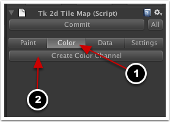

Documentation
Script Reference
Forum
Documentation
Script Reference
Forum
Create a new scene, delete the default camera and add a tk2dCamera. Set up the camera size at 20 pixels per meter, set origin to center.
Download the tilemap sprites from here. Unzip the file and add the contents into your Unity project (from the Unity menu bar, select 'Assets > Import New Asset...' and select tiles_spreadsheet.png)
Note: These art assets are from the "Platformer Art Assets DELUXE" by Kenney.
Create a sprite collection (Project > Create > tk2d > Sprite Collection), and call it "TileMapTutorial". Open up the sprite collection editor and dock it. Instead of using individual sprites, we will import a spritesheet. Click "Create > Sprite Sheet" in the sprite collection editor then drag the tiles_spritesheet from the Project window to the Sprite Sheet Texture box in the SpriteCollection window.
Once the spritesheet has been dragged across, Config settings will become available. Change the settings so they are the same as the screenshot below and then click on the 'Apply' button. In settings, make sure the sprite collection size is set to 20 pixels per meter, and change the collider depth to 10. Commit the sprite collection.
Click on the 'Settings' button which will bring up the settings for this sprite collection, and make sure the sprite collection size is set to 20 pixels per meter, and change the collider depth to 10. Then click on the 'Commit' button to save all the changes you've made to the sprite collection.
settingsbutton">
Create a tilemap in the scene by clicking "Create > tk2d > Tilemap" in the Hierarchy window.
In the Inspector window in the Tk 2d Tile Map component area, select the SpriteCollection you created earlier from the drop-down list in the Sprite Collection field.
selectspritecollection">
If you already have Tile Map Data and Editor Data objects then you can simply drag them across to the corresponding slots. However, we don't have these yet so we will need to create them. Create the tilemap data and editor data objects by clicking on the 'Create' button; this will open a window which will allow you to change the name of the object and where to save it. Just use the default name for both tile map data and editor data and save them in the 'Assets' folder. After each one is created and saved, the relevant field will be updated with the newly created object. Once both are done, you'll see the complete tilemap editor interface.
saveassetsnew">
Tilemap data objects store information such as tile size, spawned prefabs and other shared data. Reuse tilemap data objects when you need to share data between scenes. These aren't tied in to the actual sprite collection, so as long as the sprite order is the same, you can have a snow sprite collection, a grass one, etc and reskin your level with ease.
Tilemap editor data objects store brushes, and other editor preferences.
Finally, click on the "Pallete Properties" foldout. You should see the sprites from your sprite collection here. The tiles per row setting tells tk2d how many tiles to display in one row, and display scale lets you shrink the sprite preview in the inspector. We'll set Tiles Per Row to 12 and Display Scale to 0.3. Don't worry if your tiles don't appear in the correct order, we can use some other features to help out there.
Make sure your scene view is set to "Back" and "Perspective" is turned off.
Switch the tilemap editor to "Paint" mode.
Make sure you're in "Draw" mode.
You will now be able to paint by picking tiles in the palette and clicking in scene view. Use the blue cursor as a guide.
While you can do a lot by simply using the tilemap scene toolbar, it is probably worth learning some useful shortcuts at this point. This can greatly speed up your interaction with the tilemap editor, especially in paint mode. REMEMBER, the paint area for the default TileMap is HUGE and the camera only covers a very small part of it. Depending on where you draw your tiles, you may have to move the camera to be able to see them in Game view!
Ctrl click - to erase a tile.
Controls (Mac)
Once you're done painting, remember to click "Commit".
Switch the tilemap editor to "Color" mode, and click "Create Color Channel". This creates a vertex color channel for the tilemap, that can be used to colorize the tilemap.

We're going to make the scene dark. Pick a dark blue color (RGB: 23, 39, 89) in the Color picker, and click Clear. You'll notice the entire tilemap has now been tinted a dark blue.
We can now paint "light" into the tilemap. Pick a bright color, and you can now paint light areas directly into your tilemap. Color painting is a nice and quick way to add lots of variety to your tilemap.
Adding colliders to your sprites will automatically create collision meshes on your tilemap.
Create collision shapes for your sprites as shown in this tutorial here. You only need to create colliders for the sprites you are using in your tilemap editor. Don't forget to commit the sprite collection editor once you're done.
Hint: If your sprite is rectangular, you can simply select a Box Trimmed collider type instead of drawing a polygon shape. This can save you a lot of time.
Hint: In most cases, polygon collider front and back caps will not be required for tilemaps. Set them to none.
Commit your sprite tilemap editor. Select the TileMap Render Data object in the Hierarchy window, and you should see your collider mesh.
If you don't see the collider as shown above, make sure your tilemap is committed (colliders aren't created in edit mode) and you remembered to change the collider depth to 10 in the sprite collection.
In addition to painting a highly optimized tilemap, you can also use the tilemap editor to place GameObjects into your scene. You do this by setting up certain tiles to be replaced by prefabs. In this example, we will turn one of the crate sprites into a rigid body.
Select your tile map sprite collection in the Project window and click on the 'Open Editor...' button in the Inspector window. Select the crate sprite (tiles_spritesheet/50) in the sprite collection editor. Set collider type to box trimmed and commit.
Create a sprite in the scene (Hierarchy window > Create > tk2d > Sprite), and select this sprite in the sprite picker. Position it appropriately in the scene, taking special care to ensure the z position remains at 0. Rename the sprite and call it "Crate".
cratesprite">
Add a rigid body component to this sprite (in the Inspector window click on the 'Add Component' button then select 'Physics > Rigidbody'). This will allow the sprite to be affected by game physics. Be sure to set up the constraints as shown below.
In the Game window, press play and make sure the rigid body behaves as expected, e.g. if you created it above the ground it should fall to the ground and stop/roll depending on the inclination of the surface.
We will now create a prefab of this sprite. Drag it into the project window to create a prefab. Once you've created a prefab, you can delete the sprite that is in the scene.
Select the tilemap and go into Edit mode. Switch to the data tab.
Select the tile with the box, and drag the Crate prefab into the "Prefab" slot.
Every occurance of this tile will now be replaced with the prefab in the scene. Paint a few crate tiles into the scene and press play to start your game. All the crates you've painted in have now been replaced by the prefabs, and they all react and fall using rigid body physics! This is just scratching the surface - you can use this feature to build much more complex behaviours.
{kind=link}